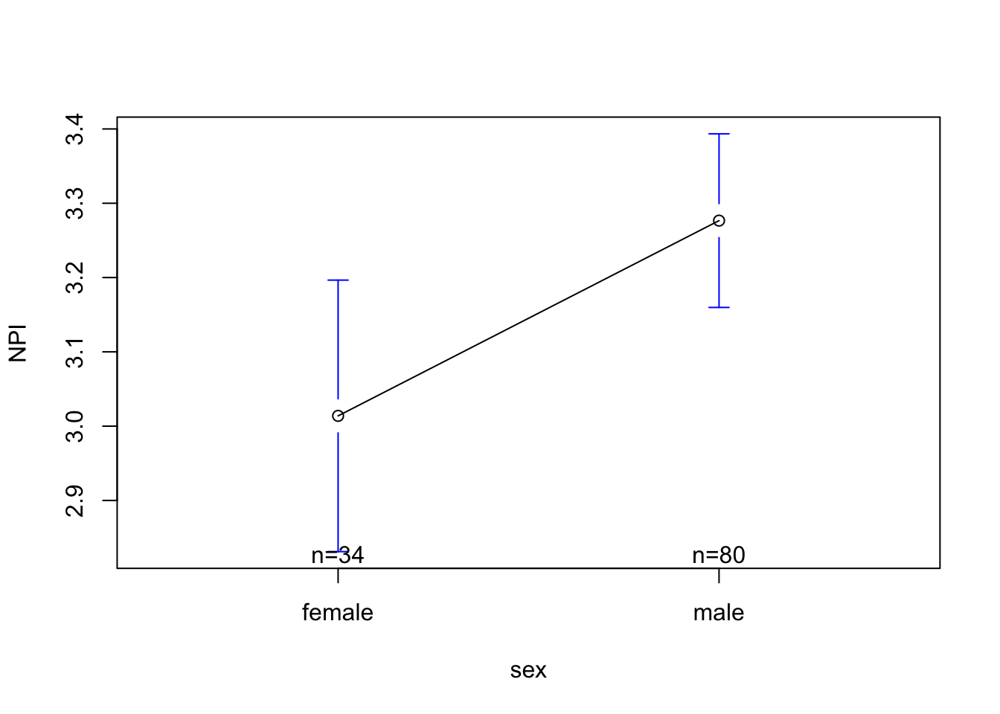

Part 1 : The Linear Model with a Categorical IV with Two Levels
RECAP : Working With Categorical Factor and Levels
It’s been a while since we focused on categorical variables. As a reminder, a categorical variable measures variation in terms of groups. The specific groups are called levels, and the broad name for the groups is called a factor.
For example, in the “MBA Business Student Data” (hormone_data.csv) researchers measure the variable sex as a categorical factor, with just two levels : female and male1.
1 I’ll just spend pages going over it. Hah hah.
Code
mba <-read.csv("~/Dropbox/!WHY STATS/Chapter Datasets/hormone_data.csv", stringsAsFactors = T)mba$sex
[1] male male male male male female male male male male
[11] male male male male male male male male male male
[21] male male male male male male male male male male
[31] male male male male male male male male male male
[41] male male male male male male male male male female
[51] female female female female female female female female female female
[61] female female female female female male male male male male
[71] male male male male male male male male male male
[81] male male male male male male male male male male
[91] male male male male male male male male male male
[101] male male male male female female female female female female
[111] female female female female female female female female female female
[121] female female
Levels: female male
I can use the plot() function to illustrate this variable, and summary() function to report the number of individuals in each group.
Code
plot(mba$sex)
Sex, Graphed and Summarized
Code
summary(mba$sex)
female male
35 87
A Conceptual Example
The equation for a linear model with a categorical IV is identical to what we’ve seen before : \(\huge y_i = a + b_1 * X_i + \epsilon_i\)
We are making a prediction about some dependent variable (\(y_i\)) from a linear equation that has an intercept (\(a\), the starting place for our prediction), and then a slope (\(b_1\) an adjustment we make) based on information about another (independent) variable (\(x_i\)).
For this first example, let’s define a model to predict narcissism (how self-centered and egotistical a person says they are) from the person’s sex.
Before we jump to the linear model, let’s graph our dependent variable using the hist() function, since the variable is numeric. In the mba dataset, NPI (Narcissistic Personality Inventory) is what researchers defined for Narcissism
Code
hist(mba$NPI, col ='black', bor ='white', main ="", xlab ="Narcissism (NPI) Score", xlim =c(1,5))
Narcissism Variable, Graphed
The data look good - I don’t see any outliers or problems in the data, and while it seems a little odd nobody said they were a 1 in terms of narcissism, the distribution is mostly normal and maybe everyone’s a little narcissistic?
In the graph below, I’m using the plot function to illustrate the individual narcissism scores.
Each individual narcissism score is a dot defined by the value on the y-axis, and their index (position in the dataset) is located on the x-axis. So the individual in the top left corner has a narcissism score of around 4.45, and was one of the first people to provide data (the index is not super relevant).
See if you can guess where the mean is; illustrated as a horizontal line that goes closest to all the individual narcissism scores, such that the sum of the residual errors will be zero. Click the tab to see where the mean is actually is.
How did you do? I was a little low on this one. Okay; let’s keep moving.
The graph below illustrates the same data, however this time I’ve asked R to color the dots based on the variable sex. In this graph, red dots illustrate the narcissism score for males in the dataset, the black dots illustrate the narcissism score for females in the dataset. Narcissism scores are on the y-axis, and the x-axis again indicates the index of the individual.
Take a moment and look at this graph - what do you observe?
Code
plot(mba$NPI, pch =19, col = mba$sex, ylab ="Narcissism Score", xlab ="Index (Position in Dataset)",main ="Plot of Individual Narcissism Scores\nGrouped By Sex (Red = Male, Black = Female)")
What Professor Sees.
I see that there are more red dots than black dots. This matches what I know about the variable ‘sex’ - there were more Male MBA students than Female MBA students in the data.
I see that there are some clusters of where red and black dots occur. For some reason, the males and females are grouped - my guess is that these data were collected in two waves (maybe two classes of students) and were organized in each class by sex. This is not super relevant to the data, but
I see that more of the red dots are higher on the y-axis than the black dots. This is not super easy to see, but there seems to be a trend there - the red dots are slightly higher on average than the black dots. But you don’t have to take my word for it, this is what the linear model does!
Okay, time to play….WHERE’S…THAT….LINE!!!! (crowd of students go wild). Think about where you would draw two horizontal lines in the graph above - one that is closest to all the red dots and one that is closest to all the black dots.
Wow! How did you do??? Professor’s observations from the graph on the last page appear to be correct; the red dots tend to be higher than the black dots.
I can see this on the graph because the red line (which is the average of the red dots) is higher than the black line (which is the average of the black dots).
This is the core idea of a linear model - we are making predictions of one variable (y = the DV = Narcissism) from another variable (x = the IV = sex). For people who are male (the red dots), we are going to predict a narcissism score of around…..3.3 (where the red line hits the y-axis). Not every male has this exact same narcissism score (life is complex!) - we can see the residual error of red dots above and below this line (we will get to calculate this soon; hooray!) - but this red line defines the trend.
For people who are female, we can predict a narcissism score of around 3 (where the black line hits the y-axis). Not every female has this exact same narcissism score, but the line defines the trend.
And now, we can calculate the difference between these two groups - 0.3 - as the slope - the change we make in our predictions of narcissism depending on whether the person is male or female. Wow.
Connecting a Linear Model to the Graph
Okay, let’s dig into what’s really going on here with the model. To define these lines, I ran the same function we used last week - `lm()`.
Code
mod <-lm(NPI ~ sex, data = mba)
This code defines an object (that I’m calling mod, but you can call it whatever you want) as a linear model (lm), predicting Narcissism (NPI) from the variable sex, using the mba dataset. Nothing is show, because we have just defined the model.
Code
coef(mod)
(Intercept) sexmale
3.0138235 0.2628015
The coef() function asks R to report the coefficients from this new object. R reports the intercept (3.01) and a slope (0.26). Note that R has assigned this slope to one of the groups (male) of the categorical variable.
The linear model that we have defined with this categorical independent is doing the same thing that our linear model with a numeric IV did - making predictions about the dependent from changes in the independent variable.
The slope is the key statistic here, since it tells us how our predictions of the dependent variable should change as the independent variable changes. When the independent variable was numeric, it could theoretically take any value. We could, for example, calculate the narcissism of someone who was 20 years old, 21 years old, 20.5 years old, etc. Of course, it may not be appropriate to calculate the narcissism of someone who was -100 years old, or 1000 years old (since these are nonsensical numbers), or even someone who was 10 years old if all the original data were based on college-age students.
When the independent variable is categorical, it cannot take any value, since the data are constrained to be in a specific group. This means that we have to assign each group some numeric value - something called dummy coding.In our example, researchers have measured sex as a simple binary (Male or Female), the independent variable (sex) can only take two values - Male and Female. Male and Female are not values, so we will assign them values - 0 and 1.
R defaults to alphabetical order - because F (for Female) comes earlier in the alphabet than M (for Male), when X = 0, we will be referring to the Females in the dataset, and when X = 1, we will be referring to the Males in the dataset.2
2 It’s up to you which group will be assigned the value 0 and which group will be assigned the value 1, and later we will learn how to swap this around and why it might matter.
IV Value
Categorical Factor Level
X = 0
Female
X = 1
Male
Let’s look at the graph. The intercept is the starting place for our predictions when all X values (the IV) are equal to zero. In this case, an X value of zero means that the individual is NOT male. The only other option in these data if the individual is NOT male is to be female. So the intercept - 3.01 - is the predicted Narcissism for someone who is female.
Code
coef(mod)
(Intercept) sexmale
3.0138235 0.2628015
Code
plot(mba$NPI, pch =19, col = mba$sex, ylab ="Narcissism Score", xlab ="Index (Position in Dataset)",main ="Plot of Individual Narcissism Scores\nGrouped By Sex (Red = Male, Black = Female)")abline(h =coef(mod)[1], lwd =5, col ='black')abline(h =coef(mod)[1] +coef(mod)[2], lwd =5, col ='red')
The slope is the adjustment we make to our prediction when X changes by 1, which means we refer to the males in the dataset. This means we add 0.26 to our starting place = 3.01 + .26 = 3.27 = where the horizontal red line is drawn = the predicted value of Narcissism for males in the dataset.
A Simpler Way to Illustrate a Model with a Categorical IV: the plotmeans() function
I only use the plot() function for conceptual understanding - there are better (and easier) ways to visualize this linear model in R.
One method I like is the plotmeans() function. This function comes from the gplots package. You will need to install this package once, then load it from the library each time you start R.3
3 install.packages(“gplots”) to install the package, then library(gplots) to load.
4 The warning message is telling me that the gplots and the stats libaries both have a function called lowess. R is “masking” this function from stats, which means if I refer to the lowess function , R will think I mean the one that comes from the gplots package. If I want to use the lowess from the stats library, I will need to manually tell R to do this using stats::lowess(). We won’t use the lowess function in this class.
Below is what it looks like when I install the gplots package (remember you only need to do this once) and then load the gplots library.4
Once I get the gplots library working, I can use the plotmeans() function. This works similar to plot(), in that I define a DV, IV, and dataset. It can also take familiar arguments (like changing the title, axis labels, and axis limits). Below is the default graph you see when I run the most basic code :
Code
library(gplots)
Attaching package: 'gplots'
The following object is masked from 'package:stats':
lowess
Code
plotmeans(NPI ~ sex, data = mba)

NPI (Narcissism) scores are on the y-axis. R has limited the range of this variable in order to highlight the slope.
The categorical variable sex is defined on the x-axis. I can see the two groups - female and male. Above each label, R has listed the sample size (n) - the number of individuals in each group (there are 34 females and 80 males who gave narcissism data).
The small dot for each group is the predicted value of Narcissism for that group. Note that the dot for females is 3.01 (the intercept) and the dot for males is 3.27 (which is .26 higher than female = the slope).
The bars above and below the dots are something called “standard error bars”. We will learn about those in a few weeks; but you can basically think of them as an illustration of the “margin of error” we have when making predictions.
The line connecting the two dots is trying to illustrate the slope.However, it’s a little misleading, since it makes it seem like there are possible predicted values of Narcissism between female and male. While sex is a spectrum, these researchers did not measure sex in a numeric way, so there’s not data looking at estimates of narcissism for non-cisgendered people / folks on the spectrum, so this line is not appropriate. We can turn the line off with an argument.
Below is a graph I might run to “clean-up” some of these issues; I’ve removed the line illustrating the slope, expanded the range of the y-axis, and renamed the variables.
Warning in arrows(x, li, x, pmax(y - gap, li), col = barcol, lwd = lwd, :
zero-length arrow is of indeterminate angle and so skipped
Warning in arrows(x, ui, x, pmin(y + gap, ui), col = barcol, lwd = lwd, :
zero-length arrow is of indeterminate angle and so skipped
Notice that when I expand the y-axis range to include the full range of the scale, the difference in narcissism looks a lot smaller than it did when the graph was “zoomed” in. This is a critical media literacy skill - researchers sometimes report “zoomed in” graphs that make the effect look bigger than it really is.
If only there was a way to actually define how large an effect is..using numbers! Oh….do you hear that…..it’s \(R^2\)’s music!!!!!
\(R^\) and the Linear Model with a Categorical IV
The principle behind \(R^2\) for a linear model with a categorical IV is the same - we are looking to see how much less residual error there is when we use the model to make predictions of our DV, compared to when we use the mean when making predictions of our DV.
You can try to visualize this decrease in the graphs below.
Code
par(mfrow =c(1,2))plot(mba$NPI, pch =19, ylab ="Narcissism Score", xlab ="Index (Position in Dataset)",main ="Residual Errors Using the Mean")abline(h =mean(mba$NPI, na.rm = T), lwd =5)plot(mba$NPI, pch =19, col = mba$sex, ylab ="Narcissism Score", xlab ="Index (Position in Dataset)",main ="Residual Errors Using the Model")abline(h =coef(mod)[1], lwd =5, col ='black')abline(h =coef(mod)[1] +coef(mod)[2], lwd =5, col ='red')
For the mean (graph on left), the residual errors are the distance between each individual score (dot) and the prediction (black line).
For the model (graph on right), the residual errors are the distance between each red dot (males actual narcissism score) and the red line (predicted narcissism for males) AND the distance between each black dot (females actual narcissism score) and the black line (predicted narcissism for females).
I can calculate these residuals, like we did in the last chapter for a linear model with a numeric IV.
It’s a pretty small difference in residual errors, and plugging these values into our equation of \(R^2\) shows that our model really only reduces residual error by about 5% (compared to the mean).
Code
(total.residual - model.residual)/model.residual
[1] 0.0534467
Code
summary(mod)$r.squared # R^2 the easy way
[1] 0.05073507
So yes, male business students say they are more narcissistic than female business students, but differences in sex only explain about 5% of the variation in narcissism. Life is complex. As always.
Re-Leveling a 2-Level Factor Variable.
Okay, last thing. Remember how I write that the order of the levels (female = 0, male = 1) is arbitrary, and R defaults to alphabetical order? Sometimes you want to change the order around - in this example, make male = 0 and female = 1.5
5 It’s not important to do releveling in this example. However, sometimes one group is a clear reference group that should be assigned as the intercept. For example, if one group is the “default” experience, and you want to see how the other group changes that default. We’ll chat more about this next week.
This is called releveling. When you relevel, the data do not change - just the order of the data changes.
Code
relevel(mba$sex, ref ="male")
[1] male male male male male female male male male male
[11] male male male male male male male male male male
[21] male male male male male male male male male male
[31] male male male male male male male male male male
[41] male male male male male male male male male female
[51] female female female female female female female female female female
[61] female female female female female male male male male male
[71] male male male male male male male male male male
[81] male male male male male male male male male male
[91] male male male male male male male male male male
[101] male male male male female female female female female female
[111] female female female female female female female female female female
[121] female female
Levels: male female
Note that this time at the bottom of the output, R is listing male as the first level, and female as the second level. To save the releveling change, I’m going to define a new variable (sexR) that is part of the mba dataset. I can then use this new, releveled variable, in my linear model and create a graph.
This graph should look familiar; it’s the mirror image of what we saw before. The intercept is still the predicted value of narcissism when X = 0, but now X = 0 means the person is NOT female (and therefore is male). This predicted value of 3.27 is the same predicted value we saw before releveling.
The slope now is the adjustment in narcissism we make when we go from X = 0 to X = 1, or the difference in narcissism between females and males. This is just the flip of our previous slope, and describes that our prediction is that females will be .26 points less narcissistic than males.
And if I ask R to calculate the R2 value, I get the same result because the model has not really changed; just the order of my levels.
Let’s practice with another example : Professor wants to know whether there are sex differences in testosterone. Define a linear model to predict testosterone (DV = test) from sex (IV = sex). Graph the linear model, report the slope and R2 value from the linear model, and interpret what you learn.
Try this on your own. There’s a key (and video key) below.
Part 2 : The “Four Reasons” Why You’d Observe a Pattern in the Data
Example : The Mascot Dataset
Last lecture, we saw that there was a relationship between how much explicit prejudice against indigenous groups people reported, and their love for a native american mascot.
Watch the video below to learn about the “four reasons” why we might observe this pattern in the data.
Reason
Definition
mascot attitudes ~ indigenous prejudice + error
causation
the IV causes the DV to happen
prejudice causes people to dehumanize others, and see them as mascots;
reverse causation
the DV causes the IV to happen
liking the mascot causes people to become more prejudiced.
third / confound variable
there’s some other variable that’s not in your model that is really causing the relationship
mascot attitudes ~ prejudice + education + error; education is causing people to be prejudiced (less educated people are more prejudiced) and like the mascot (less educated people aren’t aware of the horrible racist history our society has caused indigenous groups).
chance
we found this pattern due to random chance
the people in our study just happened to show that more prejudice → more liking for the mascot.
Example : Personality and Longevity
Researchers have found a relationship between conscientiousness (a personality variable that describes how much someone says they are organized and on-time) and how long they will live.
Answers to Personality and Longevity Example
Causation. Conscientiousness causes people to die less early; makes people more likely to go to the doctor; follow safety rules (wear helmets!); etc than people low in conscientiousness.
Reverse Causation. Could mortality cause people to be less conscientious? No - dying is the last thing you do, and happens AFTER people have a personality. Reverse causation is not possible in this example.
Third Variables. The researchers do control for some possible third varibles - by including gender in the model, for example, they account for the fact that women tend to be more conscientious (likely due to socialization and expectations that they do lots of the mental and emotional if not physical labor), and live longer. We’ll talk about this more when we learn about multiple regression. But the researchers don’t account for every confound…perhaps income is a confounding variable; richer people are more likely to be conscientious (easier to be organized when basic needs are met / can throw money at problems), and richer people are more likely to live longer (can afford healthcare) than less rich folks.
Chance. the people in this study just happened to show that more conscientiousness → less mortality.